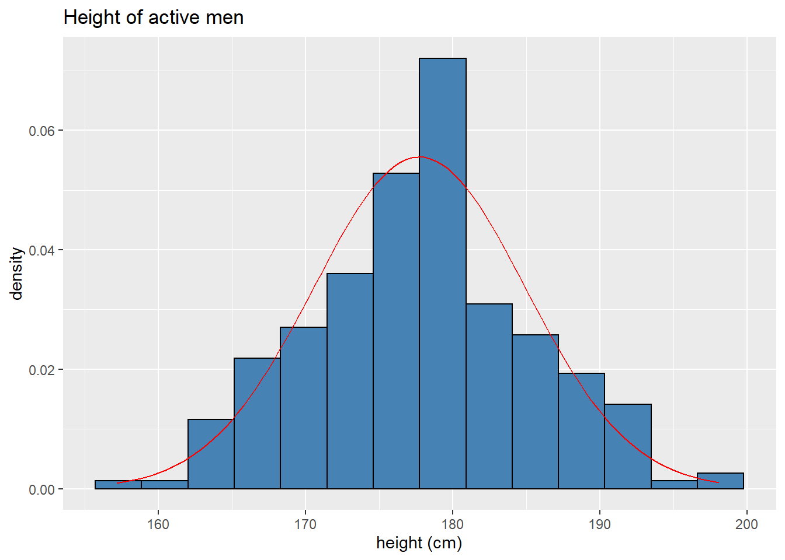
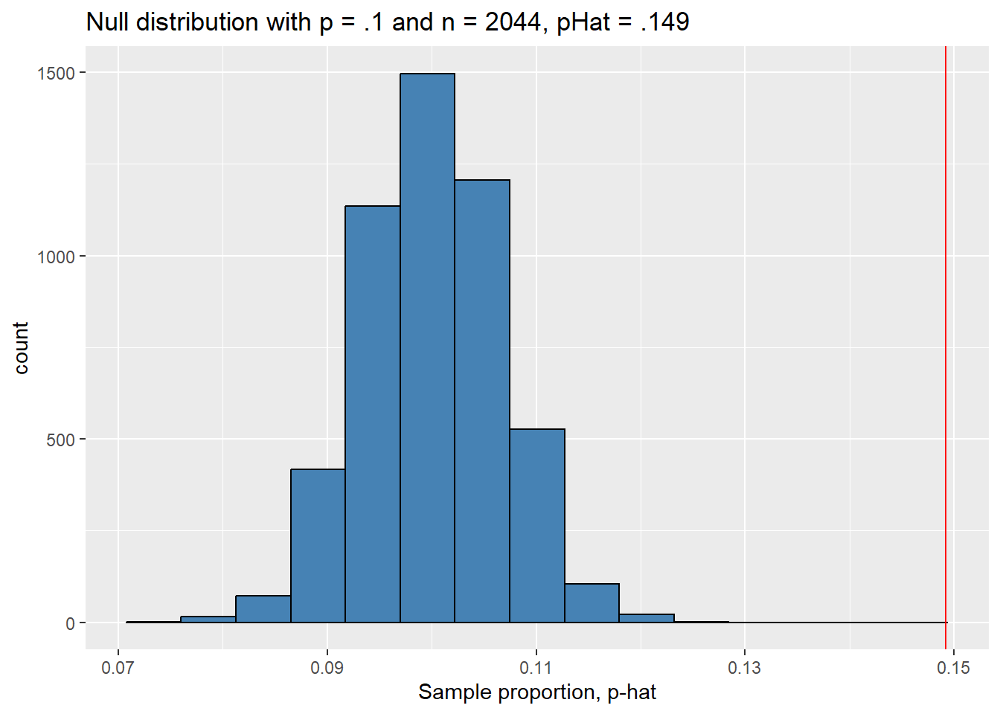
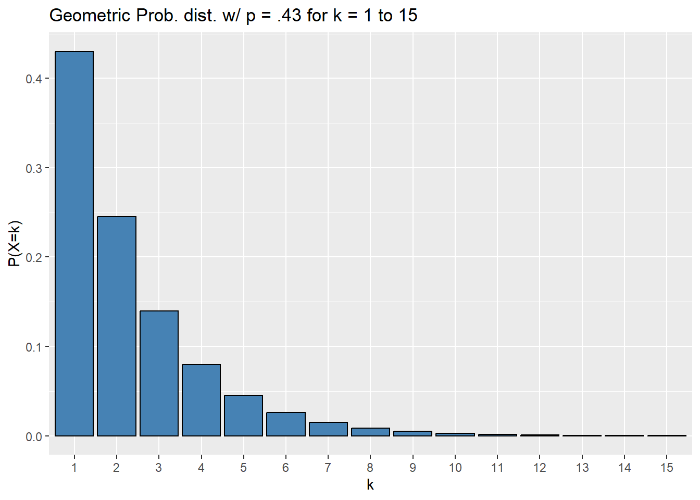
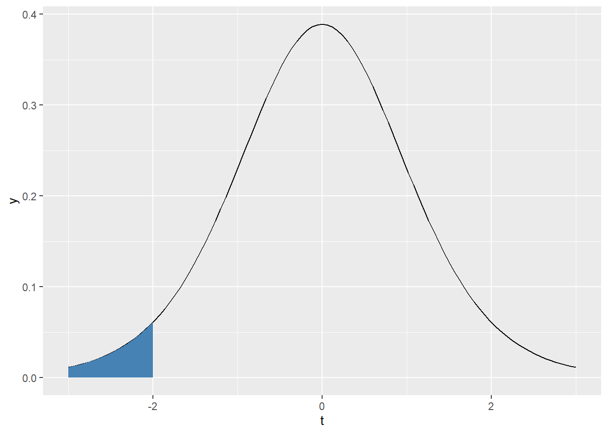

Chapter 6 Inferential statistics, take 1
This chapter and the next are going to introduce inferential statistics in R, but from two different perspectives. This chapter will focus on doing all of the calculations involved in statistical inference “by hand” (where here we really mean using R to implement the formulas/ideas). The next chapter will show you how to perform many of the same calculations using functions native to R. It is valuable knowing how to do both so that you can check one or the other or possibly write your own type of statistical test one day!
Both chapters will be organized according to the type of variables we will be analyzing. So, for example, we’ll start with statistical inference for a single categorical variable. One can (and probably should) read the “by hand” section of this chapter in tandem with the corresponding native function section of the next chapter. This chapter will include a brief summary of the ideas involved in statistical inference, but the next will just go straight into the details.
The code chunk below attaches all packages we’ll use in this chapter and sets a seed which basically determines a starting point for some of the randomization we’ll employ in the chapter. Setting a seed insures that the same random samples will be drawn every time the code is run.
library(tidyverse)
library(openintro)
library(infer)
set.seed(1187)6.1 Basics of statistical inference
We will learn about three primary types of statistical inference in this class, each aimed at answering different types of questions. To illustrate the types of questions we endeavor to answer, think about analyzing the political landscape in America. You could ask:
What proportion of Americans identify as politically independent?
Are there more politically independent people in Montana than in Idaho?
How what proportion of voters will identify as politically independent in the future?
The first question is asking for an estimate of a population parameter (the true proportion of independents in America). The second question, on the other hand, is asking about a difference between two population parameters. The third requires a prediction based on past data. These types of questions are certainly related (for instance, you could answer the second question by estimating each of the two population parameters), but the most common tools for answering them are slightly different.
Our main tool for answering the first question above is a confidence interval, which uses an estimate of the amount of variable we expect between samples to provided a range of plausible values for the population parameter. The tool we use to answer the second question is called a hypothesis test; these test assess how likely or unlikely your sample is if there were no differences. Hypothesis tests involve understanding the amount of variability we expect to see between samples. We access this this quantity by understanding the distribution of possible samples. The probability distribution associated to all possible samples is called a sampling distribution, which we discuss more in the next section.
6.1.1 Sampling distributions
Taking a simple random sample is, of course, a random process. Assigning a number like the sample proportion or sample average to this sample, then, naturally turns sample statistics into random variables. Since we can think of each sample statistic as a random variable, each sample statistic has an associated probability distribution called a sampling distribution! The overall population under consideration determines the sampling distribution and we almost never have access to population-level data, so you may wonder how or if we have any hope of understanding the sampling distribution of our statistic of interest. In particular, we hope to understand the shape, the center, and the spread of the sampling distribution. There are two primary was of doing this: through simulation and through theory. This class touches briefly on the simulation approach, but focuses mostly on the theoretical approach to accessing sampling distributions.
Before moving on to describe these approaches, we need a quick definition that helps us differentiate from talking about a population distribution and talking about a sampling distribution. The standard error, abbreviated SE, of a sampling distribution is simply its standard deviation.
One of the miracles of statistics (Note: it is not a real miracle since it is a mathematical theorem, but it amazes the author to this day.) is the Central Limit Theorem. We will state the Central Limit Theorem in a few different ways throughout this chapter, but each version essentially says the same thing. Namely, if you have a sufficiently large (caution: this means different things in different contexts) and high quality sample (IE a sample with independent observations, usually obtained through random sampling), the sampling distribution will be symmetric and unimodal with its center at the true population parameter. Moreover, as the sample size increases, the standard error decreases. In other words, all sample statistics will cluster around the true population parameter and observing a sample stat above the population parameter is just as likely as observing one below. The fact that the standard error decreases as the sample size increases codifies our intuition that “large samples are usually better,” since it implies that a sample statistic calculated from a larger sample is more likely to be close to the true population parameter than one calculated from a smaller sample.
Before moving on to discuss how we use sampling distributions, let’s try to make this a bit more concrete by simulating a sampling distribution using a technique called bootstrapping which takes a large, random sample, and resamples it many times with replacement to simulate the process of taking many different samples. We’ll use the gss2010 data set from the openintro package which records the highest educational attainment (among other things) of 2044 randomly sampled Americans in 2010.
Suppose we’re interested in knowing more about the proportion of all Americans who do not have a high school diploma. The gss2010 data set serves as our sample and we can use the sample proportion \(\hat{p}\), read as “p hat”, as a point estimate for the true population proportion \(p\).
pHat <- sum(gss2010$degree == "LT HIGH SCHOOL") / length(gss2010$degree)
pHat## [1] 0.1492172So our sample indicates that in 2010, about 15% of the American population had less than a high school diploma. But this is only a sample of 2044 Americans. If we took another sample of 2044 people and calculated the same proportion, how different do we expect that proportion to be? We can simulate this by drawing from our original sample, but doing so with replacement.
# Take sample
sample2 <- sample( gss2010$degree, size = 2044, replace = TRUE)
#Find proportion of high school dropouts
pHat2 <- sum(sample2 == "LT HIGH SCHOOL") / length(sample2)
pHat2## [1] 0.1364971This sample proportion is different, but not by too much. Of course, 2 different samples don’t provide enough evidence to make any conclusions about the amount of variability we should expect among all possible samples. To estimate the standard error, we need to simulate many more samples. We’ll use the following code, using commands from the infer package, to do this. The code below takes 5000 samples of size 2044 from our original sample again with replacement, changes the degree column in each sample to a binary outcome (no HS diploma, or other), counts the number of people in each sample without a high school diploma, then calculates the corresponding sample proportion.
simulated_sampling_distr <- gss2010 %>%
rep_sample_n(size = 2044, reps = 5000, replace = TRUE) %>%
mutate( degree = if_else(degree == "LT HIGH SCHOOL", "LT HIGH SCHOOL", "other")) %>%
count(degree) %>%
mutate(p_hat = n / sum(n)) %>%
filter( degree == "LT HIGH SCHOOL")
head(simulated_sampling_distr)## # A tibble: 6 × 4
## # Groups: replicate [6]
## replicate degree n p_hat
## <int> <chr> <int> <dbl>
## 1 1 LT HIGH SCHOOL 322 0.158
## 2 2 LT HIGH SCHOOL 315 0.154
## 3 3 LT HIGH SCHOOL 317 0.155
## 4 4 LT HIGH SCHOOL 310 0.152
## 5 5 LT HIGH SCHOOL 314 0.154
## 6 6 LT HIGH SCHOOL 311 0.152We’ve simulated a sampling distribution! Let’s look at a histogram of this simulated distribution to assess it’s shape and spread. Remember, the Central Limit Theorem says this distribution should likely by symmetric and unimodal.
ggplot(simulated_sampling_distr, aes(x = p_hat)) +
geom_histogram(bins = 15, color = "black", fill = "steelblue") +
labs(title = "Distribution of sample proportions, n = 2044",
subtitle = "Estimating SE for 2010 proportion of Americans without a HS diploma",
x = "Sample proportion, p-hat")
Voila! Our sampling distribution does seem to be symmetric and unimodal. Where precisely is the center?
#average sample proportion
mean(simulated_sampling_distr$p_hat)## [1] 0.1492041What, approximately, is the standard error? Simply the standard deviation of the column p_hat!
sd(simulated_sampling_distr$p_hat)## [1] 0.007862322This means if we were to repeatedly sample 2044 Americans and record the proportion of people with less than a college degree, we should expect to see a difference of about 0.8% between the proportions on average. As will see in the next two sections, understanding the standard error is the key to performing inferential statistics. However, before we move on to using sampling distributions, let’s simulate the Central Limit Theorem’s other main claim: the standard error decreases as the sample size increases.
To show this, we’ll go the opposite direction and take smaller samples from the gss2010 data set. We should see the standard error of this simulated distribution increase. The code below simulates a sampling distribution with sample size \(n = 100\).
sampling_dist2 <- gss2010 %>%
rep_sample_n(size = 100, reps = 5000, replace = TRUE) %>%
mutate( degree = if_else(degree == "LT HIGH SCHOOL", "LT HIGH SCHOOL", "other")) %>%
count(degree) %>%
mutate(p_hat = n / sum(n)) %>%
filter( degree == "LT HIGH SCHOOL")
head(sampling_dist2)## # A tibble: 6 × 4
## # Groups: replicate [6]
## replicate degree n p_hat
## <int> <chr> <int> <dbl>
## 1 1 LT HIGH SCHOOL 8 0.08
## 2 2 LT HIGH SCHOOL 20 0.2
## 3 3 LT HIGH SCHOOL 21 0.21
## 4 4 LT HIGH SCHOOL 15 0.15
## 5 5 LT HIGH SCHOOL 15 0.15
## 6 6 LT HIGH SCHOOL 20 0.2Note that just looking at the first 6 sample proportions we can already see more variability than our first distribution. Let’s visualize this one.
ggplot(sampling_dist2, aes(x = p_hat)) +
geom_histogram(bins = 15, color = "black", fill = "steelblue") +
labs(title = "Distribution of sample proportions, n = 100",
subtitle = "Estimating SE for 2010 proportion of Americans without a HS diploma",
x = "Sample proportion, p-hat")
Notice that the center is about the same as our first sampling distribution, but our second is more spread out as we claimed above! To check these claims, let’s look at the average sample proportion and the estimated standard error.
mean(sampling_dist2$p_hat)## [1] 0.14884sd(sampling_dist2$p_hat)## [1] 0.0353421The average sample proportions are super close, but the standard error of our distribution with \(n = 100\) is about 5 times as large as the standard error of the distribution with \(n = 2044\). This fits our intuition: small samples are less reliable because they have more variability around the population parameter.
Now that we have a feel for sampling distributions, let’s use these simulated sampling distributions to make some inferences.
6.1.2 Confidence intervals
Recall that a confidence interval provides a range of plausible values for a population parameter. For example, we will use our point estimates from the previous section to estimate the true proportion of Americans without a high school diploma. The width of a confidence level depends on two quantities:
the confidence level: a measure of the likelihood that our interval contains to true population parameter. Typical confidence levels are 90%, 95%, and 99%.
the standard error: the standard deviation of the sampling distribution.
Your confidence level determines a critical value \(CV\). If your confidence level is \(CL\), then \(CL\)% of all sample proportions will fall without \(CV\) standard deviations of the true population parameter within the sampling distribution. Thus, as your confidence level increase, the critical value increases, and so your confidence interval ends up getting wider. This makes sense: to be more confident in your estimate, your range of plausible values better be “larger.”
Now we can describe the general formula for confidence intervals:
\[ \text{point estimate} \pm CV \cdot SE\]
In the sections to come, the details of your point estimates along with the procedure to calculate the standard error and critical value will change, but the general formula for a confidence interval is always the same. With this in mind, it becomes much more important to be able to correctly interpret confidence intervals. Before closing out this section, let’s use our simulated sampling distribution from the previous section to estimate the proportion of Americans without a high school diploma in 2010. In particular, we’ll calculate a 95% confidence interval.
Looking back at the histogram of simulated_sampling_distr, we see that it is approximately normally distributed. Recall that roughly 95% of all observations in a normal distribution fall within two standard deviations from the center. Thus, as a rough approximation, our critical value is \(CV = 2\).
We’ve also already found our point estimate, the sample proportion of Americans without a high school diploma pHat, and our standard error, the standard deviation of the sampling distribution.
pHat## [1] 0.1492172SE <- sd(simulated_sampling_distr$p_hat)
SE## [1] 0.007862322Using the formula, \(\text{point estimate} \pm CV \cdot SE\), our 95% confidence interval is
CI <- pHat + c(-1,1)*2*SE
CI## [1] 0.1334926 0.1649419In other words, with 95% confidence, we estimate that between 13.3% and 16.5% of all Americans in 2010 did not have a high school diploma.
6.1.3 Hypothesis tests
We use confidence intervals to estimate population parameters, but sometimes we only want to figure out if a population parameter differs from some value. This situation arises when you ask questions like “Will a majority of American Republicans vote for Donald Trump in the 2024 presidential election primary?” or “Do more than 10% of Americans fail to graduate high school?” To answer these types of questions statistically, we perform hypothesis tests. Every hypothesis test has two competing claims:
\(H_0\), the null hypothesis. This typically represents the status quo, that there is no difference, that there is no effect, or that the variables independent.
\(H_a\): the research or alternative hypothesis. This represents, well, your research question. There is a difference, or an effect, or the variables in question are dependent.
We always express the null and alternative hypothesis as statements involving population parameters. For instance, if \(p\) represents the proportion of Americans without a high school diploma in 2010, we would turn the question “Do more than 10% of Americans fail to graduate high school?” into a hypothesis test as
\(H_0 : p = .1\) (or \(p \leq .1\))
\(H_a : p > .1\)
We use sample data to evaluate hypothesis tests and do so by determining how likely or unlikely our sample data would be if the null hypothesis were true. This is called the \(p\)-value of a sample. More precisely, the \(p\)-value of a sample is the probability of observing a sample at least as a favorable for the alternative hypothesis as your own, assuming the null hypothesis is true.
Let’s think about what a \(p\)-value tells is. If you have a relatively small \(p\)-value, say .01, then there would be a 1% chance of observing the data you have (or data that’s even more extreme) if the null were true. We have two competing possibilities here: either the null hypothesis is true and we have witnessed a rare event simply by chance or the alternative hypothesis is true. Unfortunately (and this is especially if you only have a single sample) there’s no way to tell which world you’re living in! As an attempt to remedy this dilemma, we must set a significance level before performing our hypothesis test. The most common significance levels are \(\alpha = .01, .05, \text{ and } .1\). You use the significance level \(\alpha\) to evaluate the hypothesis test. In particular, if
the \(p\)-value is less than \(\alpha\), reject the null and accept the alternative. Or
the \(p\)-value is greater than or equal to \(\alpha\), you fail to reject the null.
Note that a hypothesis test is like a jury trial: a jury either finds the defendant guilty or not guilty, they never deem a defendant innocent. Similarly, we can never prove the null hypothesis; instead, we can only collect enough evidence to believe that it is false. With this in mind, we think of the significance level \(\alpha\) as the probability of a false positive in a hypothesis test. In other words, if the null were true and you could repeatedly perform the same hypothesis test, you would end up rejecting the null \(\alpha\)% of the time.
In general, there are three broad types of hypothesis tests: one-tailed upper, one-tailed lower, and two-tailed tests. The type of test determines how you calculate the \(p\)-value of your sample because it determines what counts as “more favorable for the alternative hypothesis.”
To illustrate this idea, let’s pretend we’re performing a hypothesis test for a proportion with
\[ H_0: p = .5 \]
and suppose we took a sample with size \(n = 200\) and \(\hat{p} = .55\). Below we’ll look at the three types of alternative hypotheses and visualize the corresponding \(p\)-values for our imaginary sample.
- Two-sided hypothesis test. In this case, we’re simply checking to see if the population parameter deviates from the null value. For our example: \[ H_a: p \neq .5 \]
Samples that are at least as favorable for \(H_a\) as our own come in two flavors: samples with a proportion of at least .55 and those with a proportion of at most .45. Notice that the samples with proportions of at most .45 really are just as favorable as those with proportions of at least .55 when we’re checking for a difference because they are equally as far away from the null proportion of .5. Thus, the \(p\)-value of a two-sided hypothesis tests will be a two-tailed probability. The plot below helps visualize this \(p\)-value as an area in the sampling distribution. We have hidden the plotting code here to prioritize the concepts.
#set mean and sd of normal sampling dist.
args <- c(mean = .5, sd = sqrt(.5*.5/200))
#plotting
ggplot(data.frame(x = c(.4,.6)), aes(x = x)) +
stat_function(fun = dnorm,
args = args,
geom = "line") +
stat_function(fun = dnorm,
args = args,
geom = "area",
fill = "steelblue",
xlim = c(.4, .45))+
stat_function(fun = dnorm,
args = args,
geom = "area",
fill = "steelblue",
xlim = c(.55, .6)) +
labs(title = "P-value of two-sided hypothesis test",
subtitle = "null prop. = .5, p_hat = .55, n = 200",
x = "sample proprotion",
y = "")
- One-sided upper hypothesis test: In this case, we’re simply checking to see if the population parameter is greater than the null value. For our example:
\[ H_a: p > .5 \]
Samples that are at least as favorable for \(H_a\) as our own only one flavor this time: samples with a proportion of at least .55. Thus the \(p\)-value for this hypothesis test is an upper-tail area. The plot below helps us visualize this.
#set mean and sd of normal sampling dist.
args <- c(mean = .5, sd = sqrt(.5*.5/200))
#plotting
ggplot(data.frame(x = c(.4,.6)), aes(x = x)) +
stat_function(fun = dnorm,
args = args,
geom = "line") +
stat_function(fun = dnorm,
args = args,
geom = "area",
fill = "steelblue",
xlim = c(.55, .6)) +
labs(title = "P-value of one-sided upper hypothesis test",
subtitle = "null prop. = .5, p_hat = .55, n = 200",
x = "sample proprotion",
y = "")
- One-sided lower hypothesis test: In this case, we’re simply checking to see if the population parameter is less than the null value. For our example:
\[ H_a: p > .5 \]
Samples that are at least as favorable for \(H_a\) as our own only one flavor: samples with a proportion of at most .55. Thus the \(p\)-value for this hypothesis test is a lower-tail area in the sampling distribution. The plot below helps us visualize this.
#set mean and sd of normal sampling dist.
args <- c(mean = .5, sd = sqrt(.5*.5/200))
#plotting
ggplot(data.frame(x = c(.4,.6)), aes(x = x)) +
stat_function(fun = dnorm,
args = args,
geom = "line") +
stat_function(fun = dnorm,
args = args,
geom = "area",
fill = "steelblue",
xlim = c(.4, .55)) +
labs(title = "P-value of one-sided lower hypothesis test",
subtitle = "null prop. = .5, p_hat = .55, n = 200",
x = "sample proprotion",
y = "")
Our \(p\)-value is large because our sample proportion is above the null value when we thought it was going to be below. We should revise our alternative hypothesis in this case.
Let’s finish this section using the high school diploma question we started this chapter with. In particular, in 2010 did more than 10% of Americans fail to graduate high school? As a hypothesis test:
\(H_0: p = .1\)
\(H_a: p > .1\)
Let’s set our significance level to \(\alpha .05\). To evaluate the hypothesis test need to calculate a \(p\)-value. To accomplish this, we need to be able to assess the likelihood of our sample assuming the null hypothesis is true. Here we’re still using the gss2010 data for our sample; recall the recall the sample proportion is \(\hat{p} \approx 0.149\) and the sample size is \(n = 2044\).
In the next section we’ll learn some theory that describes the sampling distribution, but we will simulate a sampling distribution under the null hypothesis.
# generates results from 5000 binomial experiments w/ probability of
# success = .1 and sample size of n = 2044, returns sample proportion.
null_dist <- tibble(p_hat = rbinom(5000, 2044, .1)/2044)
# center of distribution
mean(null_dist$p_hat)## [1] 0.1000021# standard error
SE <- sd(null_dist$p_hat)
SE## [1] 0.006583714Let’s visualize the null distribution and our sample proportion \(\hat{p}\)’s location in the nul distribution.
ggplot(null_dist, aes(x = p_hat)) +
geom_histogram(bins = 15, color = "black", fill = "steelblue") +
geom_vline(xintercept = pHat, color = "red") +
labs(title = "Null distribution with p = .1 and n = 2044, pHat .149",
x = "Sample proportion, p-hat")
As we’d expect the null sampling distribution is approximately normal. The plot above indicates that our sample proportion \(\hat{p}\) would be quite unlikely if the null hypothesis were true. To estimate exactly how unlikely, let’s estimate the \(p\)-value of our sample.
# count the number of simulated samples with proportions at least as large as
# our actual sample proportion, divide by number of samples in simulated dist.
pValue <- sum(null_dist$p_hat >= pHat ) / length(null_dist$p_hat)
pValue## [1] 0This means that if 10% of Americans didn’t have high school diplomas in 2010, the probability of finding a sample of 2044 Americans of which 14.9% or more do not have a high school diploma is essentially 0.
Because our \(p\)-value is less than the significance level \(\alpha = .05\), we reject the null hypothesis and accept the alternative. In other words, our data provide compelling evidence to believe that more than 10% of Americans in 2010 did not have a high school diploma.
We finish this section by noting that we spent a lot of time on this example and a lot of time/space on explanation here. Once you get the hang of this, you will perform and interpret hypothesis tests quickly and efficiently. Moreover, most of what we’ll do in this class will not require simulating sampling distribtions. For more on this, read on!
6.2 Analyzing categorical variables
Now we will move in to using theoretical sampling distributions to calculate confidence intervals and perform hypothesis tests.